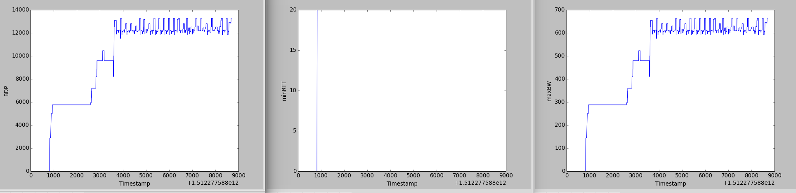

Lab 4b: BBR
Program Structure and Design
In this lab, the goal is to implement BBR and incorporate it into our cTCP. Taken into consideration that, we have a different framework from Linux kernel, and we did not make interfaces for congestion control, we are allowed to vary from standard Google BBR. The most important part of BBR is estimation of BDP, in other words, measurements of RTT and BW. Another indispensable part is state shifting. And pace adjustment should not be forgotten.
This report will be quite long as there are two bugs underlying the starter code. I think I should make it clear as this is quite evil and debugging with starter code is not that pleasant. These two bugs are stated in "Implementation Challenges" section.
-
cTCP state structure modification (
ctcp.c):struct ctcp_state { ...... bbr_state_t *bbr; /* bbr state and information stored */ }This design make BBR a little bit "interface-like". BBR related functions can be called inside cTCP functions, passing this pointer to BBR state as parameter. This made it easier to turn it on and off, which got debug more handy.
-
BBR state (
ctcp_bbr.h):struct bbr_state { int state; /* current state */ int prevState; /* previous state */ long minRtt; /* current minimum RTT in the window in ms */ long minRttTimestamp; /* timestamp of current minimum RTT in ms */ uint16_t maxBw; /* current maximum BW in the window in bpms */ uint16_t maxBwLifetime; /* lifetime of current maximum BW in count */ long lastDeliveredTime; /* last time upon an ACK */ uint32_t maxBwLifetime; /* stay in appLim area until this byte counter runs out */ long nextSendTime; /* next send time to pace steadily */ int bwNoGrowthCnt; /* count the round where BW has no significant growth */ long probeRttUntil; /* stay in probe RTT state until this time */ int startupFourSegCnt; /* at least we can send 4 segments when we don't have RTT and BW */ int bwExpireCnt; /* count the number of times BW expires */ int probeBwUntil; /* send at a higher rate in probe BW state until */ int drainBwUntil; /* send at a lower rate in probe BW state until */ }This state structure is mainly used to store kinds of states and information needed to keep BBR running correctly. Then I will demonstrate how BDP is estimated. What is more, I also modified the structure "ll_node" to record timestamp of the caches segment was sent, cumulative number of bytes delivered when the segment was sent, etc, to assist in estimation. Due to length limitaion of the report, this is not shown.
As for RTT, we have every segment's timestamp upon sending, called sendTime. And when we receive an ACK, I call this moment nowTime. Then we have estimation of RTT of this single segment, as nowTime-sendTime, then we send it into the RTT filter. What is needed to consider more is that, ACK may be delayed. In order to cooperate with delayed ACKs, only last segment ACKed contributes to RTT filter. If not, it becomes a little bit useless, as former segments always yield higher RTT due to delayed ACKs.
In terms of BW, we have cumulative number of bytes delivered when a segment was sent, called deliveredOnSend, and we have the timestamp of last moment when we receive an ACK, called lastDeliveredTime. Then upon receiving new ACKs, we have new cumulative number of bytes delivered called deliveredNow. Then BW estimation is (deliveredNow-deliveredOnSend)/(nowTime-lastDeliveredTime). By doing this, we take the interval between ACKs as sampling windows, and bytes delivered in windows divided by the length of windows are our estimation of BW. BW is used to calculted BDP, along with calculting the pacing of segments sending. As stated in BBR paper, sending in a "11110000" pattern is totally different from pattern "10101010". The latter should behave better as average RTT should be lower. So even if our target is to send one BDP infight, we cannot send too fast. Instead, we should keep pacement according to our BW. Upon each sending, next sending time is calculated by bytes sent this time divided by BW.
As stated above, we already have BW and RTT. BDP = BW*RTT, and thus we have an estimation of BDP. And this should be our cwnd, as the core of BBR is to limit inflights around one BDP.
But this is not finished yet, as we have states in BBR. This is a simple FSM and under different state, we have different modifier for BW reference and BDP reference. For example, in STARTUP state, we should send faster than BW has indicated, so when refer to BW, a modifier around 2.8 is multipled by BW, resulting sending faster and filling up the pipe quicker. In DRAIN state, however, a modifier around 0.3 is multipled, indicating the sender to slow down, to drain the queue. If we say the soul of BBR is estimation of BDP, then this FSM is the body of BBR, without which BBR will never find out true BDP.
Briefly about BBR funtions:
-
bbr_on_ack: This is called when an ACK is received. According to BBR paper and p-code, RTT and BW mesurements are done here, and using there newly measured RTT and BW to update the filter.
-
bbr_get_available_len: This is called when there is data to send. It firstly checks whether "next sending time" has passed. If not, then due to keep smooth pacement, we should not send. If so, then return the number of bytes permitted to send by congestion window, says one BDP. This congestion window, however, also has modifier for it. It is not simply set to be one BDP. It gets higher in STARTUP and more steady when in PROBE_BW, as in STARTUP, we need to fill the pipe quickly, but in PROBE_BW, we need to send smoothly.
-
bbr_on_send: This is called upon sending a segment. Several kinds of information are recored, as stated above.
-
Other functions such as BW filter and RTT filter are left out here due to length limitaion of the report.
Implementation Challenges
There are mainly two challenges, and both of them are buried in the starter code. The one is related to line endings, and the other one has something to do with multiple client-server connections.
-
For the first one about line endings, there are several screenshots to illustrate this issue. In these tests, we will send binary files made up only of "0x0a", known as line feed, which is line break on Unix, from cTCP client, to cTCP server and python simple server.
This is the result of sending from cTCP client to cTCP server:
This is the result of sending from cTCP client to python simple server:
It is very clear that, when interoperating with python simple server, it adds a "0d" known as carriage return before the last "0a", and corrupts our binary file. This is evil, as it corrupts the image below:

Notice the noise pixel. cTCP insert a 0d before 0a there and causes this noise. And every time you send this file at a threshold rate or higher, it corrupts the same pixel, as server recvs in a fixed rate (1024). Someone may say it is not cTCP's fault, as it might result from buggy newline munging of python's socket. But, notice the bytes tranferred in cases above. The former sent 512 bytes, while the latter delivered 513 bytes. That suggests that this bug is buried in cTCP. And without too much efforts, I mean this evil really took me two hours to find out (Initially I thought it was somewhere of my BBR implementation went wrong and corrupted my reliable delivery), these lines should be responsible for the bug (Buggy codes have been commented out):
The very reason is that simple server will be classified into webserver, resulting cTCP starter code turning ending "0a" into "0d0a". Notice that, ending "0a" refers to the last byte of the buffer "buf". This mechanism is good when we interoperate with Google's webserver, but evil when we tranfering binary files to python simple server.
-
In terms of the other one, well, it is still not resolved:
This happens on dumbbell topo, while I try to initial multiple client-server connections on that topo. It is clear that, upon connection of h3 and h4, that connection of h1 and h2 lost. Notice the packets marked in red in wireshark. They are RST segments. Upon establishing a new connection, the existing client h1 will send so many RST segments to the existing server h2. It is very clear that, no logic in cTCP main file should be responsible. I believe this is not done by the existing client. It is done by the new client, by function "send_resets", correspond to "[INFO] Cleaning up old connections... done!". This function captures any "leftover" packets, and for every packet it will sends back a RST. This ends the existing client-server connection. Finally I found out the code to blame for:
Let's look at these codes. First of all, it is a loop, indicating that it will handle all "leftover" packets before connecting to the server. Then for every "leftover" packet it got, it sends back a RST segment, insisting that connections corresponding to these packets are down, are "old" connections. This triggers the issue stated here, as the so-called "leftover" packets, even include packets not for new client. ACKs from h2 to h1 are also included. This is proved by this test:
Notice that, "conf port" is the port this client is initialized on, and "this dport" is the destination port of "leftover" packets. "26411" is the network version of "11111", which is the port of client h1. That means, client h3, insists that ACKs from h2 to h1 on an alive connection, are "leftover", and what is more, h3 even pretend that he is h1, sending RST to h2! This is demon. To fix the issues and test fairness of BBR, I tried multiple times to modify these codes, but in vain. I think there is supposed to be a thorough inspection of how connections are established and why older connections are needed to take out, before issuing a fix to this. Tentative modifications are as follows:
-
First of all, I tried to comment out the whole function body, which was useless, as the client h3 then would not connect to server h4, and there are packets indicating "re-used port" shown in wireshark. Reason to this behavior remains unknown to me.
-
Secondly, I tried to stop client h3 from sending RST to h2, which means I will filter out the packets not targeted at h3. But after doing this, the loop became a dead loop, ACKs are endless when h1 is sending to h2, and I think we need a outer filter outside this loop to prevent from this.
Well, let's say, I did not manage to fix this issue, but I think I may make it in a few days as have to dive deep, and, the framework of logic flow may need to be altered. Besides, the ACKs' checksum corrpution issue also happened to my code.
-
Testing
This section includes some test cases and strategies to test and debug.
-
Large File Test: Using an image file sized 4Mb named
a.jpg. On simple topo and line topo, typepython simple_server.py 10.0.0.2 12345 e.jpginto xterm h2 and thensudo ./ctcp -c 10.0.0.2:12345 -p 11111 < a.jpginto xterm h1. Files are identical while plots are as follows: (1Mbit/5ms) -
Large File Test(5Mbit/5ms):
 -
Large File Test(10Mbit/5ms):
Strategies: Full command of scientific constant. If an implementation has N features, we should come up with almost combination number of N different test cases to first test any single feature, and then test how good can they interoperate with each other. What is also important is that, during implementation, it will be good to use #ifndef to define macros logging debugging messages.
Remaining Bugs
No remaining bugs in this implementation. Large files such as image file sized 4Mb or any other binary file including ctcp itself can be correctly transmitted.